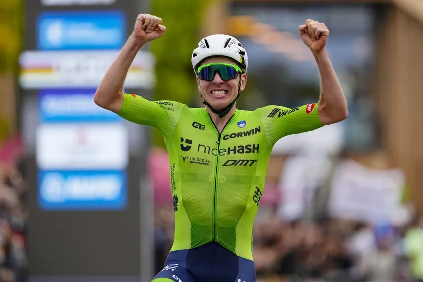
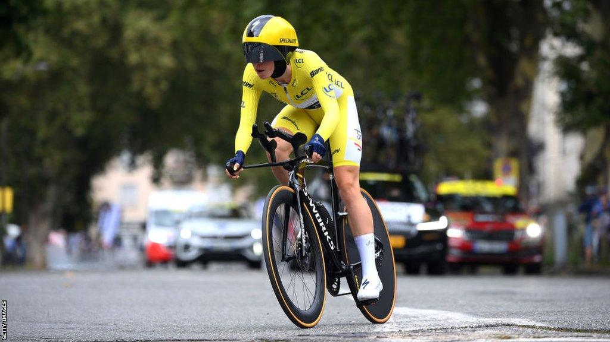
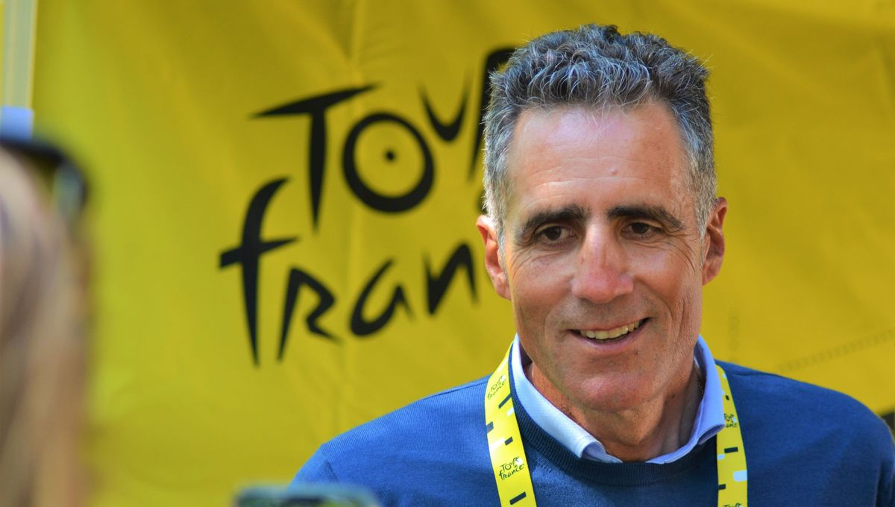
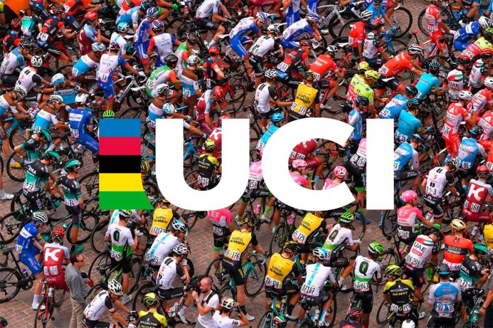

Pogačar apunta al tripleteEl esloveno llega al Tour como gran favorito tras arrasar completamente en el Giro de Italia.

Pogačar apunta al tripleteEl esloveno llega al Tour como gran favorito tras arrasar completamente en el Giro de Italia.

La ciclista neerlandesa suma su tercera victoria consecutiva en la prestigiosa ronda británica.

La leyenda navarra será la imagen oficial de la Vuelta 2026 en su histórica 80ª edición.

Entran en vigor severas restricciones a los tubulares y posiciones extremas en las pruebas contrarreloj.